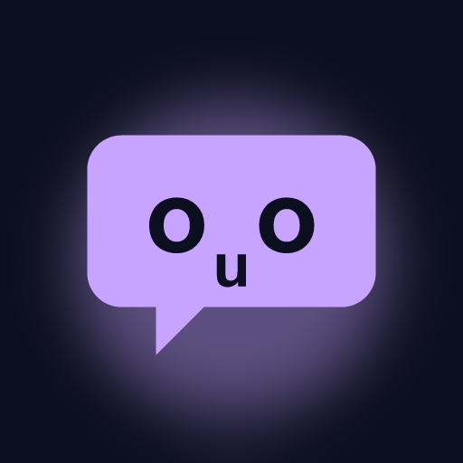

Font Guesser
A word in a typeface, four names. Daily Ten, Survival, and Font or Fake.
You see a word set in a typeface and four names underneath. Which one is it? If you have ever paused a film to work out the title font, or argued about whether a poster is Futura, this is for you. If not, it is a quick way to learn the faces you look at every day. There are three ways to play. Daily Ten gives everyone the same ten typefaces each day. Survival keeps going until you miss one. Font or Fake asks whether a name is a real typeface or a made-up one. The 74 typefaces are open-licence families from Google Fonts, rendered live, and every answer comes with a reveal: who designed it, when, and one thing worth knowing. Two hints help when you need them, 50/50 and the full alphabet in that face. Yesterday's ten, streaks and a spoiler-free share grid. Free with ads, no account, nothing to buy, plays offline once installed. The game is in English.
Get it on Google Play